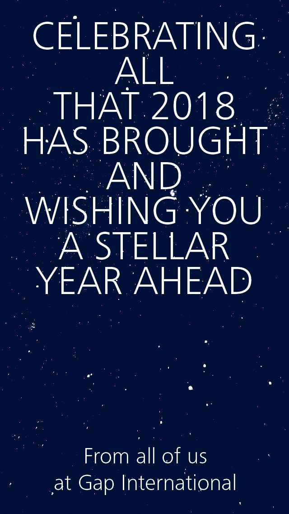

Concept 1 — Fireworks
Fireworks are a universal symbol of celebration and rememberance. They mark not only a time of a commemoration and reflection on the past, but the ushering in of the new.

Concept 1 — Fireworks
Fireworks are a universal symbol of celebration and rememberance. They mark not only a time of a commemoration and reflection on the past, but the ushering in of the new.
Concept 2 — Confetti
A frequent and familiar companion to celebration. This star confetti builds in the frame revealing the holiday message.

Concept 3a — Starry Sky
Instead of the action and dynamism of concepts 1-2, this direction opts for something more peaceful and reflective—reminding us that the sky is the limit as a new day (year) is about to dawn.
Concept 3b — Starry Type
A different take on the 3a, where the letters are composed of twinkling stars.

Notes
Once a direction is chosen, we can tweak and finess the details of the card such as copy, color, exact animation. Or, for example, Concept 1 could have a different sequence or Concept 3b might need more stars in the background, etc.